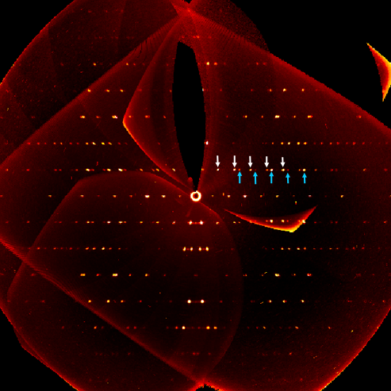
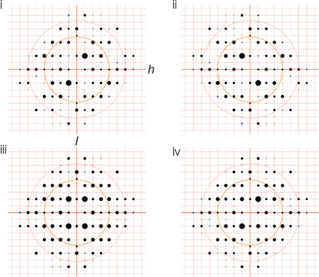

Classification
Early classifications were made on the basis of morphology, measured with contact or optical goniometers. The fine details of this scheme and the nomenclature, though useful for describing individual twins, are probably not useful for structure analysts. Classification based on the reciprocal lattice are simpler. Note that there is a rather inconsistent use of classification schemes in the literature. A fundamental division for the structure analyst is the distinction between twins in which every observable reciprocal lattice point contains contributions from both twin components, and those twins in which some points contain contributions from one component only.
|
In the central (horizontal) row the diffraction spots from two lattices
overlap exactly. In the first row above, the two lattices give rise to
separate diffaction spots (white arrows for one lattice, blue for the other).
On the next row the spots are (in this example) almost evenly spaced.
By the 4th row the spots are again overlapping. TLQS twins are normally evident from the diffraction images. The instument must decide how to process the images. In this case the intensities of reflections on the zeroth and fourth rows are the sums of both lattices. On the first and second rows the two components are well resolved and can be estimated separately. On the third row the splitting is marginal, and the instrument will have to choose for itself whether to agregate the contributions, or whether it can resolve them. |

Picture provided by Simon Parsons |
i and ii represent the diffraction patterns from each of two components (each with symmetry 2) related by a 2-fold rotations about h. If there are equal volumes of both component in the twin, the resulting image is as in iii. The diffraction image now has mm symmetry, which could lead to difficulties in determining the space group. If the volumes are unequal, the symmetry remains 2. Note that in 3 there are more strong spots in i and ii. This gives rise to an unusual distribution of E values (<|E2-1|> ~0.74) and several values of Fo substantially greater than Fc. |

Picture provided by Simon Parsons |
e.g. h k l intensity sigma 1indicates a contribution from only the primary component
h k l intensity sigma 12indicates a contribution from both components. The index of the second component (which is needed in order to determine its calculated intensity) is obtained by multiplying the given index by the twin law matrix. The concept can be extended to a sample consisting of up to nine components.
e.g. h k l intensity sigma mhkl is the index corresponding to component m.
h k l intensity sigma -1 h' k' l' intensity sigma 2The intensity and sigmas have the same values on both lines. hkl is the index of the principal component, h'k'l' the index of the minor component, indicated by the 2 at the end of the line.